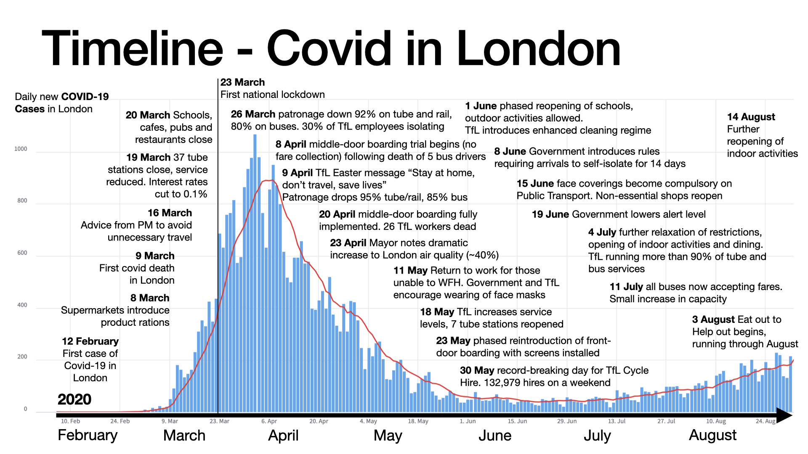

Visualising London's Covid-19 Response
Visualisation by Raphael Canty
Visualising lockdown events alongside daily new cases of Covid-19 reveals the cause and effect of London's public health response. This interactive visualisation was created using d3.js, displaying London's daily new cases and deaths over time against a measure of restriction stringency.
Hover over the line chart to see exact numbers of cases and deaths. Use the slider underneath to scrub through key events related to London's public health response and mobility change. Each one has a link to where you can read more.
London COVID-19 cases and deaths data from the UK Government's API at https://coronavirus.data.gov.uk/. Lockdown level is an indication only, determined by the author based on the lockdown restrictions in London and should not to be confused with the UK Government's COVID-19 alert level system. Events were collated from multiple sources, including Wikipedia and TfL Press releases. D3.js examples from d3noob were helpful for creating the visualisation.
The initial idea for this diagram came from a version created as a static image, produced below for posterity. This uses https://coronavstats.co.uk/england/localData as a backing column chart.
{kind=link}